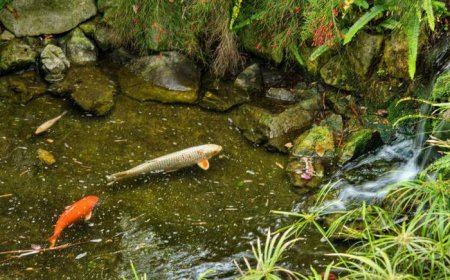
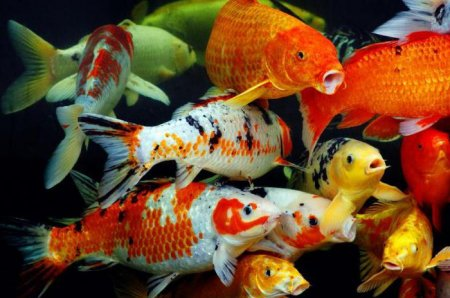
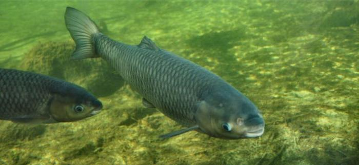
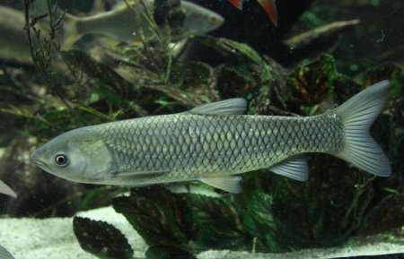
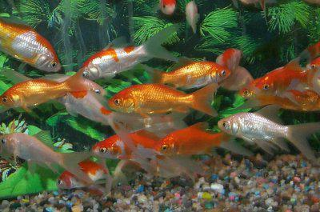
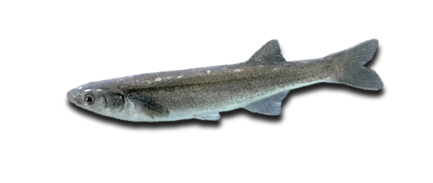
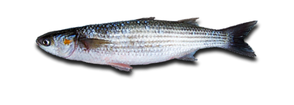

Різниця між морськими рибами і річковими
Риби живуть у водоймах незалежно від їх солоності. Представники одного виду здатні постійно мешкати або у солоній, або в морській воді. І тільки більш високі таксономічні одиниці – рід або загін (вид є підрозділом роду) – можуть похвалитися, що його представники є як серед мешканців моря, так і серед прісноводних риб. Відмінність морських риб від річкових часто буває досить умовним. Наприклад, деякі види морських риб метати ікру вирушають до річки, а річкові мешканці – в море. Такі риби називаються прохідними: ті, хто йде на нерест з річок у море, – катадромными, а ті, хто навпаки, – анадромными.
Риба ставкова:невеликий огляд.
Отже, для початку варто поговорити про те, для яких цілей зазвичай купується така риба. Ці тварини здавна привертають увагу людини своєю незвичністю. Адже життя у водоймі – це зовсім інші умови і середовище проживання, яка не завжди була зрозумілою людям. Потреба в рибі виникає не тільки у випадку рибалки, крім цього, багато хочуть створити на своїй ділянці справжній ставок, в якому кипіла б підводне життя. Саме в такому разі і купуються ставкові риби. Такі породи риб потрібні саме для того, щоб створювати у водоймі природне середовище. Взагалі, ці тварини приносять величезну користь водоймища, в якому вони мешкають. Варто докладніше розглянути всі переваги зариблення подібних водойм
Яку користь приносять такі риби?
Безсумнівно, ці породи риб не користувалися б такою популярністю, якщо не мали б стільки переваг. Водойма, в
якому живе риба ставкова, відразу стає іншим. Це пояснюється кількома причинами
По-перше, ці тварини
відповідають за насичення води різними речовинами, а зокрема, підтримують правильний баланс кисню і
вуглекислого газу, що дуже важливо для якості води в будь-якому ставку.
Друга позитивна риса, якою володіють ставкові риби, полягає в тому, що вони виробляють очищення від різних
продуктів розпаду, які існують в будь-якому природному водоймищі.
По-третє, вони помітно знижують
кількість
комах в районі водойми. Існує і ще одна позитивна особливість – коли в штучному ставку з'являється риба, він
відразу починає набувати риси природного і виглядає набагато приємніше. Таким чином, були розглянуті основні
причини, по яких багато хочуть придбати подібні види риб.
Короп кої.
Для початку варто поговорити про такому цікавому вигляді риб, як короп коі. Його назва має більш точний переклад, який звучить як «парчевий короп». Почувши таку назву, багато хто задається питанням про те, чи дійсно ця риба так красива. Короп цієї породи може похвалитися дуже незвичайною забарвленням. Взагалі, яскравим забарвленням володіють далеко не всі ставкові риби. Види, такі як коропи коі, виводяться з великим трудом. Справжнім представником цієї породи є тільки та особа, яка пройшла 6 спеціальних селекційних відборів. Після проходження таких заходів їй присвоюється потрібна категорія. Вперше ця риба з'явилася ще в XIX столітті.
Виглядає короп коі дуже цікаво: його забарвлення може складатися з декількох кольорів, залежно від його різновиду. На даний момент існує 14 варіантів забарвлень це риби, які підходять під стандарт. Вважається, що це одна з найбільш підходящих риб для розведення в ставка, оскільки вона володіє хорошою живучістю, цікавим і яскравим зовнішнім виглядом і вимагає мінімального догляду. Вважається, що короп коі може навіть впізнавати господарів і піддається годівлі з рук.
Білий амур.
Вище були розглянуті позитивні якості карпа коі. Однак це далеко не всі популярні для розведення ставкові риби. Назви більшості з них були наведені на початку статті, однак тепер варто детальніше поговорити про таку породу, як білий амур. Ця риба також належить до родини коропових. Білий амур – це риба ставкова, користується великою популярністю, використовується для зариблення для штучних водойм. Іноді може досягати досить пристойних розмірів, зустрічаються особини, вага яких досягав 40 кг. Їх довжина зазвичай до 120 сантиметрів. Ростуть мальки риб дуже швидко – це ще одна причина, чому білий амур так популярний серед всіх інших ставкових риб. Особини харчуються травою. Однак якщо у водоймі починає не вистачати рослинного корму, то необхідно підгодовувати їх спеціальним кормом, призначеним для ставкових риб. Цікаво, що розведення білого амура в одній водоймі з коропом помітно підвищує успішність рибництва у всьому водоймі, оскільки вони харчуються різною їжею і, відповідно, не є конкурентами по частині корми.
Спочатку білий амур з'явився в різних прісноводних річках, таких як Амур, Волга, Єнісей та інших, проте в даний час він активно використовується і в якості ставкової риби.
Товстолобик.
Тепер варто поговорити про таку чудову рибу, як товстолобик. Вище вже були наведені деякі ставкові риби, назви і докладна інформація про них. Отже, перейдемо до розгляду породи товстолобиків. Вони також відносяться до сімейства коропових і зазвичай живуть у прісноводних водоймах. Особини цього виду отримали свою назву завдяки особливій будові голови, їх лоб значно ширше, ніж у представників інших видів. Товстолобики в деяких випадках досягають великих розмірів. Середній їх вага становить від 20 до 35 кг, найбільші екземпляри досягають ваги в 50 кг.
Багато хто задається питанням про те, чому ж товстолобиків так часто запускають штучні ставки. Відповідь гранично проста – вони несуть величезну користь для водойм. Вся справа в тому, що представники цього роду допомагають значно очистити водойму. Їх рот влаштований таким чином, що вони можуть проціджувати воду, тим самим вона стає чистою і прозорою.
Карась.
Ще одна популярна риба ставкова, яка часто використовується для зариблення штучних водойм – це карась. Найчастіше використовується кольоровий декоративний карась. Як не дивно, це одна з найпопулярніших риб для цих цілей. Така популярність обумовлена тим, що карасі дуже невибагливі і не вимагають особливого спеціального догляду та умов проживання. На відміну від звичайного карася, кольорові особини виглядають набагато більш помітно. Його луска яскраво переливається на сонці, що із-за цього водойма виглядає особливо красиво.
Зустрічаються особини різних розмірів, існує кілька різновидів: дрібні (їх розмір складає всього 5-7 см), середні (трохи більше, від 13 до 15 см), великі (буває кілька видів, перший - від 15 до 18 см, і самі великі – від 20 до 25 см). Таким чином, існує можливість підібрати для свого водойми риб потрібного розміру, що дуже зручно. Краще всього ці рибки будуть відчувати себе зграйкою від 5 особин.
Риба морська:невеликий огляд.
Морські глибини населяє безліч різноманітних видів риб. Хижаки, промислові риби, декоративні дрібні рибки - всі вони привертають увагу людини.
Яку користь приносять морська риба?
Вчені давно помітили, що в тих країнах, де риба є головним і щоденним продуктом в раціоні, люди набагато
рідше хворіють на серцево-судинні захворювання, у них майже не буває серцевої аритмії, задишки, вони більш
активні і менше втомлюються, ніж “м’ясоїди”
Однак цей ефект властивий тільки жирній морській рибі: скумбрії, тунцю, оселедцю, лососевим, сардині і
навіть кільці, а річкова риба ним майже не володіє.
У будь-якій рибі міститься багато мікроелементів – магнію, цинку, калію, кальцію, а особливо фосфору. У
морській рибі багато брому, фтору і йоду. Також в рибі є залізо, мідь, марганець, сірка, натрій, селен і
навіть золото.
Всі види риб багаті вітамінами В, D, Е, а в риб’ячій печінці високий вміст вітаміну А.
Камбала-калкан.
Хамса є об'єктом широкого промислу. Промисел ведеться кошельковими неводами і в меншій мірі ставними неводами. Морська стайна прибрежно-пелагічна риба. У теплу пору року тримається переважно в поверхневих шарах водної товщі. У Чорному морі зимує на глибині до 140 м. Зустрічається при температурі води від 5-6 до 28 ° С.
Атерина.
Атерина у північно-західній частині Чорного моря відноситься до масових промислових видів риб та за чисельністю поступається тільки шпроту.
Кефалеві.
Поширені в середній і південній частинах моря. Тип харчування - детритофаги. Дорослий сингіль зіскрібає обростання (перифітон) з каменів і мулу. В їжі зустрічаються молюски та хробаки. Довжина досягає - 55 см, а маса - 2,5 кг.
Бички.
Бичок-кругляк складає основу промислових уловів бичків. Тіло стисле з боків, з високим хвостовим стеблом і
крутим чолом. Під час нересту тіло самців стає чорним. Виживає як в прісній, так і в солоній воді
Бичок-кнут – найбільший з європейських бичків. Тіло подовжене, міцне, з великою головою (більше 25% всього
тіла) Голова довга, плеската, нижня щелепа помітно видається вперед, а її задній кінець доходить до середини
ока.